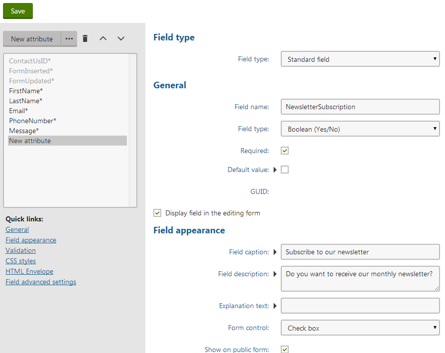
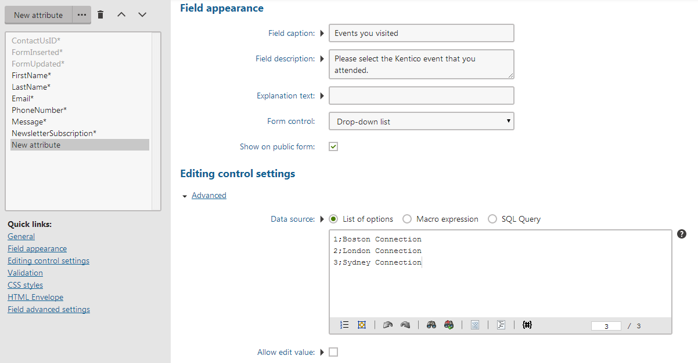

Designing forms using the Field editor
After you create a new form, you can design it either using the Form builder or the Field editor. The Field editor offers all the available options and is intended for technically skilled users and administrators.
To display the Field editor interface:
Open the Forms application.
Edit a form.
Switch to the Fields tab.
Adding fields to the form using the Field editor
Click New field.
Specify the following essential values for the form field.
Field name – sets an identifier for the field. This name is also used for the database column storing the values of the field in the form's database table.
Data type – defines the type of the field. Influences the controls which you can select from the Form control drop-down list and other options.
Size – sets the maximum number of characters that can be entered into the field.
Display field in the editing form – if you clear this option, then the field will not be displayed when editing the form's records in the system nor on the live site.
Field caption – sets the text displayed as a label for the field. You can also leave it blank.
Form control – determines how users will be able to interact with the field in the form. The options offered here include all form controls that are allowed to be shown in forms and have their scope defined by the chosen Data type.
Show on public form – select this option to include the field in the form displayed to the users on the live site. When cleared, the field will only be displayed when editing the form's records in the administration interface. It will not be included in the form on the live site. Fields with this option cleared can be useful for storing internal values.
You can find the description of other settings available for the fields in Reference - Field editor.

Click Save.
Repeat the steps 1–3 until you have all the desired fields defined.

Creating a new multiple choice field
Each form field and its functionality is based on an object called a form control, which is selected through the Form control drop-down list. This gives you almost unlimited form flexibility and customization options.
With all the fields defined, the form is ready to be published on the live site. You can do this in several different ways, which are described on the Displaying forms on the live site page.